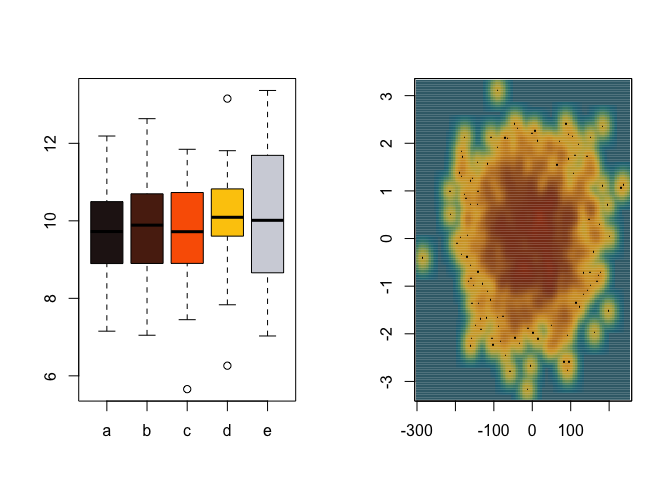
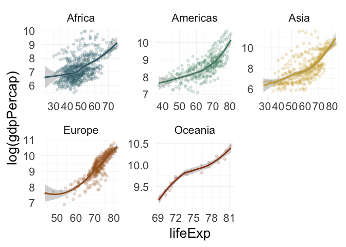
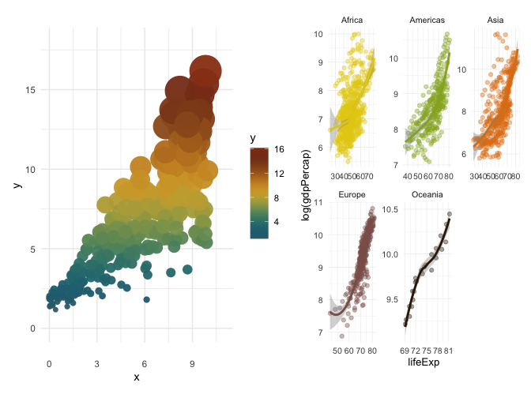

A collection of color palettes inspired by Neotropical poison frogs. With more than 200 brighly colored species, Neotropical poison frogs paint the rain forest in vivid hues that shout a clear message: “I’m toxic!”. Spice up your plots with poisonfrogs and give your dataviz a toxic twist! But wait, we also included some color palettes inspired by other pretty frog species, because… why not? 🐸
Get inspired with the collection of species behind the color palettes.

Installation
You can install poisonfrogs from CRAN:
install.packages("poisonfrogs")or from the development version in GitHub with:
remotes::install_github("laurenoconnelllab/poisonfrogs")load the package:

Usage
To see the names of all colour palettes in poisonfrogs:
poison_palettes_names()
#> [1] "Afemoralis" "Afulguritus" "Amacero" "Aminutus"
#> [5] "Ashihuemoy" "Atrivittata" "Bpicturata" "Dauratus"
#> [9] "Dsarayacuensis" "Dtazureus" "Dtnouragues" "Eanthonyi"
#> [13] "Edarwinwallacei" "Etricolor" "Haureoguttatum" "Hcinerascens"
#> [17] "Hhobbsi" "Llineatus" "Mlaevigata" "Oanchicayensis"
#> [21] "Ohistrionica" "Olehmanni" "Opbluejeans" "Opcolon"
#> [25] "Opescudo" "Oploma" "Opsancristobal" "Opuyama"
#> [29] "Oscolon" "Oskoi" "Oslita" "Osotokiki"
#> [33] "Ossanantonio" "Pterribilis" "Ptomopterna" "Pvaillantii"
#> [37] "Ramazonica" "Ribanded" "Rispotted" "Rmarina"
#> [41] "Rvariabilis"Visualize poison frog palettes:
poison_palette("Haureoguttatum")
or get their hex codes:
poison_palette("Haureoguttatum", return = "vector")
#> [1] "#732937" "#565902" "#D9A404" "#D9CAB0" "#F2F2F2"Examples
Using poisonfrogs in base R plots
par(mfrow = c(1, 2))
#Discrete scale
group <- factor(sample(letters[1:5], 100, replace = TRUE))
value <- rnorm(100, mean = 10, sd = 1.5)
boxplot(value ~ group,
col = poison_palette(
"Oanchicayensis",
return = "vector",
type = "discrete",
direction = 1
),
xlab = "",
ylab = "")
#Continuous scale
x <- rnorm(1000) * 77
y <- rnorm(1000)
smoothScatter(
y ~ x,
colramp = colorRampPalette(poison_palette(
"Ramazonica",
return = "vector",
type = "continuous",
direction = 1
)),
xlab = "",
ylab = ""
)
Using the poison scales in ggplot2
scale_fill_poison()
require(tidyverse)
require(gapminder)
require(ggridges)
require(scales)
require(patchwork)
#continuous scale
df_nottem <- tibble(
year = floor(time(nottem)),
month = factor(month.abb[cycle(nottem)], levels = month.abb),
temp = as.numeric(nottem)
)
p1 <- ggplot(df_nottem, aes(x = temp, y = month, fill = after_stat(x))) +
geom_density_ridges_gradient(scale = 2, rel_min_height = 0.01) +
scale_fill_poison(
name = "Oskoi",
type = "continuous",
alpha = 0.95,
direction = -1) +
labs(
fill = "ºF",
y = NULL,
x = NULL) +
theme_classic(base_size = 10, base_line_size = 0.5) +
theme(legend.position = "right", legend.justification = "left",
legend.margin = margin(0,0,0,0),
legend.box.margin = margin(-5,-5,-5,-5)) +
coord_cartesian(clip = "off")
#discrete scale
p2 <- ggplot(gapminder, aes(x = continent, y = lifeExp, fill = continent)) +
geom_boxplot(outliers = F) +
geom_jitter(
shape = 21,
position = position_jitter(0.1),
alpha = 0.2,
size = 0.8,
bg = "grey"
) +
stat_summary(
fun = mean,
geom = "point",
size = 1.5,
color = "black",
alpha = 0.6
) +
#theme_classic(base_size = 20, base_line_size = 0.5) +
scale_fill_poison(
name = "Amacero",
type = "discrete",
alpha = 0.9,
direction = 1
) +
theme(legend.position = "none") +
xlab(NULL) +
ylab("Life Expentancy")
p1 + p2
scale_color_poison()
#Continuous scale
set.seed(42)
n <- 300
x <- runif(n, 0, 10)
y <- 1.5 + 0.9 * x + rnorm(n, sd = 0.4 + 0.25 * x)
sz <- rescale(y, to = c(2, 14))
df <- data.frame(x, y, sz)
p3 <- ggplot(df, aes(x, y)) +
geom_point(
aes(color = y, size = sz),
shape = 16,
alpha = 0.95,
stroke = 0.6
) +
scale_size_identity(guide = "none") +
scale_color_poison("Ramazonica", type = "continuous", direction = 1) +
theme_minimal() +
ylim(0, 18) +
xlim(0, 11)
#discrete scale
p4 <- ggplot(gapminder, aes(x = lifeExp, y = log(gdpPercap), colour = continent)) +
geom_point(alpha = 0.4) +
scale_colour_poison(name = "Opcolon", type = "discrete") +
stat_smooth() +
facet_wrap(.~continent, scales = "free") +
theme_minimal(10, base_line_size = 0.2) +
theme(legend.position = "none",
strip.background = element_blank(), strip.placement = "outside")
p3 + p4 